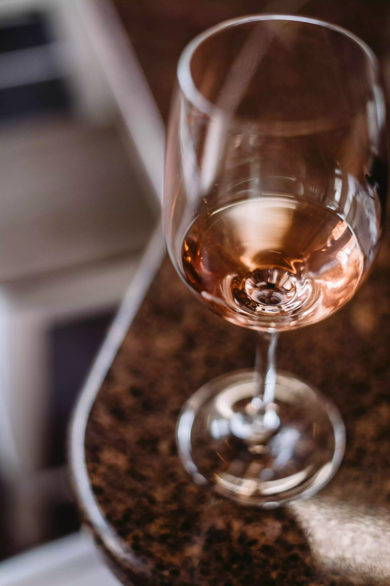

Rosato
Varianti
Vini rosati freschi e leggeri
I vini rosati più freschi e leggeri permettono tipologie di abbinamento simili a quelle dei vini bianchi strutturati. Rosato secco è il più comune, caratterizzato da freschezza e aromi fruttati.
Vini rosati di media struttura
La vinificazione in rosato non si addice alla produzione di vini di grande struttura, dando vita a vini dal contenuto in tannini e polifenoli relativamente basso. Dalla vinificazione in rosato si possono però ottenere interessanti vini di media struttura, adatti anche ad abbinamenti più arditi, spesso terreno retaggio di vini rossi anche strutturati. In genere parliamo di vini del sud Italia dove la concentrazione zuccherina dei mosti permette di ottenere prodotti dal tenore alcolico più elevato. Alcuni di questi vini qualche volta risultano anche meritevoli di un breve passaggio in legno. Rosato dolce è tipicamente prodotto con un residuo zuccherino maggiore, ideale come aperitivo o con dessert. Rosato spumante è un Vino rosato frizzante, come il rosé Champagne, noto per la sua eleganza e complessità.